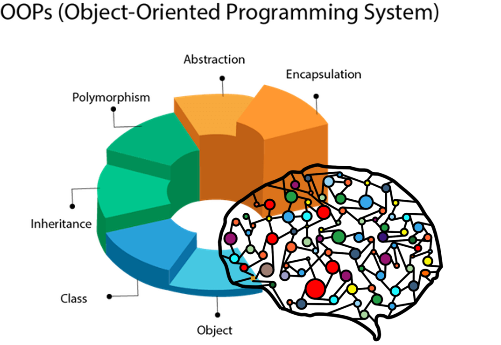
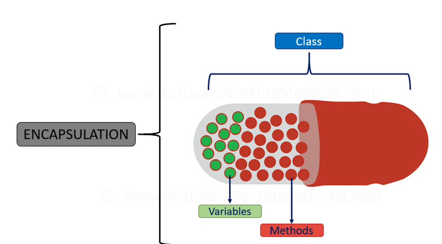

بسم الله الرحمن الرحيم
والصلاة والسلام علي أشرف المرسلين سيدنا محمد عليه أفضل الصلاة والسلام وأحمد الله جل وعلا الذي وفقني لهذا العمل
يتناول هذا الكتاب شرح PHP OOP
يجب أن تكون لديك خلفية بسيطة عن أساسيات php قبل متابعة هذا الكتاب
لقراءة كتاب أسود php

البرمجة كائنية التوجة او البرمجة بالكائنات أو oop هو مصطلح برمجي لاتوجد لغة برمجة لا تخلو منة في لغتنا هذه لغة php هي لغة أحادية الوراثة لكن ما معني هذا تابع هذا الكتاب حتي تتعلم وتعرف عنها لكن كل ما تريد معرفته عن البرمجة بالكائنات أنها طريقه تم أنشائها للتأكد من مبدأ برمجي مهم و هو يسمي ب DRY أو Dont Reapet Your Self
مثال (1)
فلنفرض مثلا أن لدينا صنف وهو يمثل أسمك مثلا أنا أسمي محمود
لذلك سوف أقوم بأنشاء صنف يحمل الاسم mahmoud
وللتصريح عن صنف في لغة php
يتم أستخدام الكلمة المحجوزة class
ويحتوي هذا الصنف علي الخصائص الخاصة بي (properties)
كالتالي : الطول , لون العينين , الوزن
الأن اذا أردت أن أكتب هذا بالكود في لغة php سوف يكون كالتالي
<?php
class mahmoud {
//الخصائص الخاصة بي properites
public $height = " 170 cm";//الطول
public $eye_color = "black";//لون العينين
public $weight = "70 kilo gram";//الوزن
}
الأن أذا أردت أن أصرح عن كائن جديد من الصنف محمود سوف أستخدم الكلمة المحجوزة new وأيضا وأخزن قيمة هذا الكائن الجديد في متغير وليكن بنفس الاسم
$mahmoud = new mahmoud();
var_dump($mahmoud);
خرج طباعة هذا المثال سوف يكون كالتالي
object(mahmoud)#1 (3) { ["height"]=> string(7) " 170 cm" ["eye_color"]=> string(5) "black" ["weight"]=> string(12) "70 kilo gram" }
يرجي ملاحظة أنه أثناء أنشاء الخصائص كالطول والوزن ولون العينين تم أسناد القيم الأفتراضية للخواص بعد علامة =
الان أنا أريد طباعة بيانات شخص أخر محمد مثلا وله خصائص غير الموجودة لدي كالطول والوزن ولون العينين وأنا أريد طباعه هذه الخصائص بدون أن أغير الخصائص الأفتراضية
سوف أستخدم فقط العلامة التالية
-> تسمي معامل الكائن (object operator)
ولتنفيذ ذلك بالكود سوف يتم كالتالي :
// هذا كائن جديد
$mohamed = new mahmoud();
$mohamed->height="160 cm";
$mohamed->eye_color="green";
$mohamed->weight="80 kilo gram";
var_dump($mohamed);
تمرين (1)
قم بكتابة صنف لجهاز أيفون يحمل الأسم appledevice
وله الخصائص التالية [ram-color-brand-Operating_system]
بدون كتابة قيم أفتراضية له
ثم قم بالتصريح عن كائنين يحملان الأسم iphone_6 و iphone_7
ثم قم بتعيين خصائص هذه الأجهزة وأستخدام var_dump()
لطباعتهم
وخصائص هذه الاجهزة كالتالي
iphone_6
- ram ="2 جيجا بايت";
- color = "أحمر";
- brand = 'ابل';
- Operating_system = 'IOS';
iphone_7
- ram ="3 جيجا بايت";
- color = "أبيض";
- brand = 'ابل';
- Operating_system = 'IOS';
حل التمرين رقم (1)
حل التمرين رقم (1)
معدلات الوصول (Access Modifiers)
ما هي الا طبقات لحماية البرنامج أو الكود أثناء العمل علية وتصميمه
| public | يمكن الوصول الي الخاصية أو الطريقة من أي مكان |
| protected | يمكن الوصول الي الخاصية أو الطريقة داخل الصنف أو الصنف الذي يرثه |
| private | الخاصية أو الطريقة يمكن الوصول اليها فقط بداخل الصنف |

المثال الأول شرح الخصائص properites
<?php
class fruit {
// الخصائص (properites) الخاصة بالفاكهة مثلا كاللون والوزن
public $color;//اللون
protected $name;//أسم الفاكهة
private $weight;//الوزن
}
//الان سوف نقوم بأنشاء كائن جديد من الصنف فاكهة
$banana= new fruit();//قمنا بتخزينه داخل متغير بأسم أبل
$banana->color='yellow';//لن يحدث خطأ
$banana->name='banana';//سوف يحدث خطأ
$banana->weight='50 gram ';//سوف يحدث خطأ
var_dump($banana);
المثال الثاني شرح الطرق methods
<?php
class fruit {
// الخصائص (properites) الخاصة بالفاكهة مثلا كاللون والوزن
public $color;//اللون
public $name;//أسم الفاكهة
public $weight;//الوزن
function set_color($n) {//دالة عامة أفتراضيا a public function (default)
$this->color=$n;}
function set_name($n) {//دالة محمية a protected function
$this->name=$n;}
function set_weight($n) {//دالة خاصة a private function
$this->weight=$n;}
}
$banana=new fruit();
$banana->set_color('yellow');//لن يحدث خطأ
$banana->set_name('banana');//سوف يحدث خطأ
$banana->set_weight('50 gram');//سوف يحدث خطأ
var_dump($banana);
المتغير الزائف Sudo والحقيقي
ما هو المتغير أصلا حتي نعرف المتغير الزائف
في الحياه مثلا هناك ما يسمي بالحصالة تقوم بحفظ النقود داخلها اليوم سوف ادخل بها 10 جنية مثلا وغدا مثلا 10 جنية
الأن لتنفيذ ذلك بالكود سوف أصرح عن متغير وللتصريح عن متغير يتم أستخدام العلامة $
وبالتالي يمكن أن أخزن بداخل المتغير أي قيمه مصفوفة أو كائن أو عدد أو سلسلة نصية
<?php
//قمت بحفظ النقود بداخل المتغير 10 جنيهات
$wallet="10 EGP";
//الأن أصبحوا 20 جنيها
$wallet="20 EGP";
//الأن سوف أقوم بطباعه ذلك
echo $wallet;
المتغير الزائف حتي أقوم بالتصريح عنة سوف أستخدم الكلمة المحجوزة $this لكن هو يتعامل فقط مع خصائص الكائن ولتوضيح ذلك اليك هذا المثال
<?php
//الصنف حصالة مثلا
class wallet{
//خاصية
public $cash;
//دالة تحتوي علي معامل parameter واحد
public function mycash($n){
// متغير زائف ليس له وجود سوي داخل الدوال أو بمعني أدق داخل methods أو طرق الدالة
$this->cash = $n;
//$n متغير حقيقي
}
}
//سوف أصرح عن كائن جديد
$object_var = new wallet();
//أعطاء قيمة لمعامل parameter الطريقة الموجودة داخل الصنف
$object_var->mycash('20 جنية');
var_dump($object_var);
التغليف (encapsulation)
هي طريقة للتحكم في الوصول الي البيانات من خلال أستخدام معدلات الوصول ك private و protected والتاكد من عدم قدرة اي شخص علي الوصول الي البيانات الا من خلال القواعد المكتوبه داخل دوال يقوم مصصم البرنامج بأنشائها

<?php
//مثال أجهزة شركة أبل
class appledevice {
//properites الخواص
private $ram;
private $model;
private $color;
//دالة لعرض مواصفات الجهاز
public function __construct($ram,$model,$color)
{
$this->ram = $ram;
$this->model = $model;
$this->color = $color;
}
}
//أنشاء كائن جديد
$iphone6 = new appledevice('جيجا بايت 2','2012 ','فضي');
// عند محاولتي تغيير قيمة الرامات للجهاز مثلا حدث خطأ
$iphone6->ram = "100 جيجا بايت";
var_dump($iphone6);// الأن عند الطباعة سوف يحدث خطأ لانه غير مصرح للوصول الي خواص و طرق الصنف خارجه
لحد الأن نحن لم نطبق مبدئ التغليف في لغة php وهذا مثال لتطبيقه
<?php
//مثال أجهزة شركة أبل
class appledevice {
//properites الخواص
private $ram;
private $model;
private $color;
//دالة لعرض مواصفات الجهاز
public function __construct($ram,$model,$color)
{
$this->ram = $ram;
$this->model = $model;
$this->color = $color;
}
public function set_ram($ram){
$this->ram = $ram;
}
public function get_ram(){
return $this->ram;
}
}
//أنشاء كائن جديد
$iphone6 = new appledevice('جيجا بايت 2','2012 ','فضي');
// عند محاولتي تغيير قيمة الرامات للجهاز مثلا لن حدث خطأ
$iphone6->get_ram("100 جيجا بايت");
var_dump($iphone6);// سوف تجري الطباعة بدون أخطاء
تعدد الأوجهة (Polymorphism)
بكل بساطة تعدد الأوجهة هو أنشاء واجهة والتصريح عنها بأستخدام الكلمة interface وذلك لانشاء وظائف يتم أستخدامها في الأصناف باستخدام الكلمة المحجوزة implements لكن بدون كتابة اي شيء داخل جسم دوال الواجهة ويوجد مثال لتوضيح ذلك الريموت كنترول يؤدي نفس الوظيفة في التليزيون والرسيفر مثل أغلاقه وفتحه وتحويل بين القنوات الأولي الثانية الخ
<?php
/*
- Polymorphism أو الواجهات interfaces مصطلح في البرمجة كائنية التوجة بمعني متعدد الأوجة
- مثال الريموت كنترول يقوم بنفس الوظيفة في كلا من التلفزيون والريسيفر
- يتم التصريح عنة بأستخدام الكلمة المحجوزة interface
- ويتم أستخدامة داخل الاصناف بأستخدام الكلمة المحجوزة implemnts
*/
/*بفرض أن لديك جهاز تليفزيون وريسيفر في منزلك
و الواجهة تمثل الريموت كنترول
*/
interface remotecontrol{
//يمكن حذف هذه الطرق methods ولن يحدث اي خطأ
public function channel_1();
public function channel_2();
public function channel_3();
public function channel_4();
public function power_on();
public function power_off();
}
// الصنف الأول : ريموت الريسيفر
class reciver_remote implements remotecontrol{
//لا يمكن حذف هذه الطرق لانه مصرح عنها في الواجهة والا سوف يحدث خطأ
public function channel_1(){
echo "تم تغيير القناة بنجاح أنت تشاهد الأن القناة الأولي ";
}
public function channel_2(){
echo "تم تغيير القناة بنجاح أنت تشاهد الأن القناة الثانية ";
}
public function channel_3(){
echo "تم تغيير القناة بنجاح أنت تشاهد الأن القناة الثالثة ";
}
public function channel_4(){
echo "تم تغيير القناة بنجاح أنت تشاهد الأن القناة الرابعة ";
}
public function power_on(){
echo "تم تشغيل الرسيفر ";
}
public function power_off(){
echo "تم أغلاق الريسيفر";
}
}
// الصنف الثاني : ريموت التيلفزيون
class tv_remote implements remotecontrol{
public function channel_1(){
echo "تم تغيير القناة بنجاح أنت تشاهد الأن القناة الأولي ";
}
public function channel_2(){
echo "تم تغيير القناة بنجاح أنت تشاهد الأن القناة الثانية ";
}
public function channel_3(){
echo "تم تغيير القناة بنجاح أنت تشاهد الأن القناة الثالثة ";
}
public function channel_4(){
echo "تم تغيير القناة بنجاح أنت تشاهد الأن القناة الرابعة ";
}
public function power_on(){
echo "تم تشغيل التيلفزيون ";
}
public function power_off(){
echo "تم أغلاق التيلفزيون";
}
}
# الأن للتصريح عن كائنات جديدة وتستطيع تعديلها كما تريد
$reciver_remote = new reciver_remote();
$reciver_remote->channel_1();
$reciver_remote->channel_2();
$reciver_remote->channel_3();
$reciver_remote->channel_4();
$reciver_remote->power_on();
$reciver_remote->power_off();
$tv_remote = new tv_remote();
$tv_remote->channel_1();
$tv_remote->channel_2();
$tv_remote->channel_3();
$tv_remote->channel_4();
$tv_remote->power_on();
$tv_remote->power_off();
//لطباعة الكائنات
var_dump($reciver_remote,$tv_remote);
الوراثة (inheritance)

هي قيام صنف بوراثة الطرق والخواص الموجودة في صنف أخر وسوف يقوم بالوراثة مع معدلات الوصول ايضا الموجودة في هذه الخواص والطرق ويمكن أنشاء طرق وخواص ايضا داخل الصنف الأبن ويتم ذلك عن طريق أستخدام الكلمة المحجوزة extends
Inheritance in OOP = When a class derives from another class
The child class will inherit all the public and protected properties and methods from the parent class
In addition,it can have its own properties and methods
An inherited class is defined by using the extends keyword
مثال 1
<?php
// الصنف فاكهة
class Fruit {
//الخواص الخاصة بالصنف
public $name;
public $color;
// دالة البناء من الدوال السحرية
public function __construct($name, $color) {
$this->name = $name;
$this->color = $color;
}
//method الاب
public function intro() {
echo "The fruit is {$this->name} and the color is {$this->color}.";
}
}
//سوف ترث فاكهة الفراولة من الصنف فاكهة
// Strawberry is inherited from Fruit
//الصنف الأبن
class Strawberry extends Fruit {
public function message() {
echo "Am I a fruit or a berry? ";
}
}
// كائن جديد
$strawberry = new Strawberry("Strawberry", "red");
//الطريقة method الموجودة داخل الصنف الأبن
$strawberry->message();
//الطريقة method الموجودة داخل الصنف الأب
$strawberry->intro();
?>
مثال 2
<?php
//الصنف فاكهة
class Fruit {
// الخواص properites للصنف
public $name;
public $color;
// دالة البناء من الدوال السحرية
public function __construct($name, $color) {
$this->name = $name;
$this->color = $color;
}
//method الاب
protected function intro() {
echo "The fruit is {$this->name} and the color is {$this->color}.";
}
}
//الصنف الأبن
class Strawberry extends Fruit {
//الطريقة method الموجودة داخل الصنف الأبن
public function message() {
echo "Am I a fruit or a berry? ";
}
}
//عند أستخدام الطرق خارج الصنف
// Try to call all three methods from outside class
$strawberry = new Strawberry("Strawberry", "red"); // OK. __construct() is public //دالة بناء عامة لن يحدث خطأ
$strawberry->message(); // OK. message() is public //طريقة عامة لن يحدث خطأ
$strawberry->intro(); // ERROR. intro() is protected طريقة method محمية يحدث خطأ
?>
مثال 3
<?php
// الصنف فاكهة
class Fruit {
// خواص الصنف
public $name;
public $color;
// دالة البناء من الدوال السحرية وهي طريقة
public function __construct($name, $color) {
$this->name = $name;
$this->color = $color;
}
// طريقة method محمية
protected function intro() {
echo "The fruit is {$this->name} and the color is {$this->color}.";
}
}
// الصنف الأبن
class Strawberry extends Fruit {
//طريقة الأبن
public function message() {
echo "Am I a fruit or a berry? ";
//أستدعاء طريقة محمية من الصنف الاب ولن يحدث خطأ
// Call protected method from within derived class - OK
$this -> intro();
}
}
$strawberry = new Strawberry("Strawberry", "red"); // OK. __construct() is public // طريقة عامة سوف يتم أستدعائها بدون أي أخطاء
$strawberry->message(); // OK. message() is public and it calls intro() (which is protected) from within the derived class
//يمكن أستدعاء الطريقة االمحمية بداخل الصنف الأب في الصنف الأبن
?>
مثال 4
(PHP - Overriding Inherited Methods) - تجاوز الطرق الموروثة عند أستدعاء طريقة لابد من التصريح عنها في الابن باستخدام نفس اسم الأب
<?php
//الصنف فاكهة
class Fruit {
// الخواص
public $name;
public $color;
// طريقة دالة سحرية تحتوي علي معاملين
public function __construct($name, $color) {
$this->name = $name;
$this->color = $color;
}
// طريقة بدون اي معاملات
public function intro() {
echo "The fruit is {$this->name} and the color is {$this->color}.";
}
}
// الصنف الأبن
class Strawberry extends Fruit {
// خاصية جديدة تم أسنادها بداخل الصنف الأبن
public $weight;
// الطريقة السحرية لبناء الابن
public function __construct($name, $color, $weight) {
$this->name = $name;
$this->color = $color;
$this->weight = $weight;
}
//استدعاء طريقة الأب وتمرير معاملات دالة البناء داخلها
//لابد ان تكون بنفس الاسم الموجود في الاب
public function intro() {
echo "The fruit is {$this->name}, the color is {$this->color}, and the weight is {$this->weight} gram.";
}
}
//كائن جديد يحتوي علي معاملات دالة بناء الاب و الابن
$strawberry = new Strawberry("Strawberry", "red", 50);
$strawberry->intro();
?>
الكلمة المحجوزة (final)
تستخدم لمنع التوريث أو تجاوز الدوال
The final keyword can be used to prevent class inheritance or to prevent method overriding
مثال (1) منع التوريث
<?php
// أستخدام الكلمة المحجوزة final
final class Fruit {
// some code بعض الاكواد
}
// will result in error سوف يحدث خطأ
class Strawberry extends Fruit { // الصنف يرث من الأب fruit
// some code بعض الاكواد
}
?>
مثال (2) تجاوز الدوال
<?php
//الصنف فاكهة
class Fruit {
// أستخدام الكلمة المحجوزة final في تجاوز الدوال
final public function intro() {
// some code بعض الاكواد
}
}
class Strawberry extends Fruit {
// will result in error // سوف يحدث خطأ
public function intro() {
// some code بعض الاكواد
}
}
?>
التجريد (abstraction)
للتصريح عن خاصية أو طريقة مجردة بأستخدام الكلمة المحجوزة abstract
Abstract classes and methods are when the parent class has a named method, but need its child class(es) to fill out the tasks. An abstract class is a class that contains at least one abstract method. An abstract method is a method that is declared, but not implemented in the code. An abstract class or method is defined with the abstract keyword
مثال (1)
<?php
// صنف مجرد
abstract class ParentClass {
//طرق مجردة عامة
abstract public function someMethod1();
abstract public function someMethod2($name, $color);
abstract public function someMethod3() : string;
}
?>
مثال (2)
<?php
// Parent class صنف أب مجرد
abstract class Car {
// خاصية
public $name;
// طريقة بناء
public function __construct($name) {
$this->name = $name;
}
// طريقة بناء مجردة عامة
abstract public function intro() : string;
}
// Child classes أصناف أبناء
class Audi extends Car {
// طريقة عامة
public function intro() : string {
return "Choose German quality! I'm an $this->name!";
}
}
class Volvo extends Car {
public function intro() : string {
return "Proud to be Swedish! I'm a $this->name!";
}
}
class Citroen extends Car {
public function intro() : string {
return "French extravagance! I'm a $this->name!";
}
}
// Create objects from the child classes
$audi = new audi("Audi");
echo $audi->intro();
echo "<br>";
$volvo = new volvo("Volvo");
echo $volvo->intro();
echo "<br>";
$citroen = new citroen("Citroen");
echo $citroen->intro();
?>
مثال (3)
<?php
abstract class ParentClass {
// Abstract method with an argument
abstract protected function prefixName($name);
}
class ChildClass extends ParentClass {
public function prefixName($name) {
if ($name == "John Doe") {
$prefix = "Mr.";
} elseif ($name == "Jane Doe") {
$prefix = "Mrs.";
} else {
$prefix = "";
}
return "{$prefix} {$name}";
}
}
$class = new ChildClass;
echo $class->prefixName("John Doe");
echo "<br>";
echo $class->prefixName("Jane Doe");
?>
مثال (4)
<?php
abstract class ParentClass {
// Abstract method with an argument
abstract protected function prefixName($name);
}
class ChildClass extends ParentClass {
// The child class may define optional arguments that are not in the parent's abstract method
public function prefixName($name, $separator = ".", $greet = "Dear") {
if ($name == "John Doe") {
$prefix = "Mr";
} elseif ($name == "Jane Doe") {
$prefix = "Mrs";
} else {
$prefix = "";
}
return "{$greet} {$prefix}{$separator} {$name}";
}
}
$class = new ChildClass;
echo $class->prefixName("John Doe");
echo "<br>";
echo $class->prefixName("Jane Doe");
?>
مجالات الأسماء (namespaces)
تم أنشاء مجالات الأسماء لحل مشكلتين هما كالتالي
1-تنظيم الكود بطريقة أفضل وذلك من خلال جعل الاصناف مقسمة في مجموعة لتؤدي وظيفة معينة
2- أستخدام أسم الصنف في أكثر من صنف
ويتم ذلك عبر أستخدام الكلمة المحجوزة namespace
ملاحظة : يسمح مجال الاسم بعدم وجود تعارض بين أسماء الأصناف لان لكل صنف مجاله الخاص
: Namespaces are qualifiers that solve two different problems
They allow for better organization by grouping classes that work together to perform a task
They allow the same name to be used for more than one class
For example, you may have a set of classes which describe an HTML table
, such as Table, Row and Cell while also having another set of classes to describe furniture,
such as Table, Chair and Bed. Namespaces can be used to organize the classes into two different groups while also preventing the two classes Table and Table from being mixed up.
Declaring a Namespace
Namespaces are declared at the beginning of a file using the namespace keyword
للتصريح عن مجال اسم
namespace Html;
ملاحظة يجب أن يكون التصريح عن مجال الاسم في بداية الملف والا سوف يحدث خطأ
<?php //خطأ نحوي syntax error // يجب ان يتم التصريح عن مجالات الاسماء في بداية الملف echo "Hello World!"; // التصريح عن مجال الاسم باستخدام الكلمة المحجوزة namespace namespace Html; ... ?>
مثال (1)
<?php
//مجال أسم html
namespace Html;
//صنف جدول
class Table {
// خواص الصنف
public $title = "";
public $numRows = 0;
// طريقة الصنف
public function message() {
echo "<p>Table '{$this->title}' has {$this->numRows} rows.</p>";
}
}
// التصريح عن كائن جديد
$table = new Table();
$table->title = "My table";
$table->numRows = 5;
?>
<!DOCTYPE html>
<html>
<body>
<?php
$table->message();
?>
</body>
</html>
لمزيد من التنظيم ، من الممكن أن يكون لديك مساحات أسماء متداخلة nested namespaces
(النحو Syntax )
التصريح عن مجال اسم html
داخل مجال أسم أخر أسمه code
: Declare a namespace called Html inside a namespace called Code
namespace Code\Html;
أستخدام مجالات الأسماء
لاستخدام مجالات الأسماء خارجها يجب التصريح عن أسم الصنف الذي بداخل المجال مرتبطا باسم المجال كالتالي
$table = new Html\Table() $row = new Html\Row();
الأن اذا كنت سوف تستخدم العديد من الاصناف الموجوده في مجال ما فان افضل طريقة لأستخدامها كالتالي
namespace Html; $table = new Table(); $row = new Row();
الأن هناك طريقة أفضل تمكنك من تغيير مجالات الأسماء كما تريد من خلال أستخدام الكلمة المحجوزة use
وأعطاءها ما يسمي alias
//أعطاء اسم alias لمجال الاسم use Html as H; $table = new H\Table();
//أعطاء أسم alias لصنف ما use Html\Table as T; $table = new T();
المميزات (traits)
لغة PHP هي لغة أحادية الوراثة بمعني انه لا تتم الوراثة سوي من أب وحيد فقط
لذلك تم حل هذه المشكلة باستخدام الكلمة المحجوزة trait
بمعني انه الميزة تمكنني من أستخدمها في العديد من الاصناف classes
والكلمة المحجوزة use للاستخدام داخل الاصناف
PHP only supports single inheritance: a child class can inherit only from one single parent So, what if a class needs to inherit multiple behaviors? OOP traits solve this problem Traits are used to declare methods that can be used in multiple classes Traits can have methods and abstract methods that can be used in multiple classes and the methods can have any access modifier (public, private, or protected) Traits are declared with the trait keyword
طريقة التصريح (النحو syntax)
<?php
//النحو
trait TraitName {
// some code...
}
?>
<?php
//النحو للصنف
class MyClass {
// الاستخدام داخل الصنف
use TraitName;
}
?>
مثال (1)
<?php
//الميزة trait
trait message1 {
//طريقة داخل الميزة
public function msg1() {
// طباعة فقط
echo "OOP is fun! ";
}
}
// صنف باسم welcome
class Welcome {
//أستخدام الميزة الأولي ياستخدام الكلمة use
use message1;
}
//انشاء كائن جديد
$obj = new Welcome();
//أستدعاء الطريقة method
$obj->msg1();
?>
مثال (2)
<?php
//الميزة بالاسم massage 1
trait message1 {
//الطريقة method
public function msg1() {
echo "OOP is fun! ";
}
}
// الميزة massage 2
trait message2 {
//الطريقة method
public function msg2() {
echo "OOP reduces code duplication!";
}
}
// صنف اسمة welcome
class Welcome {
// أستخدام الميزه باستخدام الكلمة use
use message1;
}
// صنف اسمة welcome2
class Welcome2 {
// أستخدام الميزه باستخدام الكلمة use
use message1, message2;
// يستخدم الميزتين الاولي والثانية
}
//كائن جديد
$obj = new Welcome();
//استخدام method الميزة الاولي
$obj->msg1();
##################################################
$obj2 = new Welcome2();
//استخدام method الميزة الاولي والثانية
$obj2->msg1();
$obj2->msg2();
?>
الدوال السحرية (Magic Method)
دالة البناء (Constructor)
تسمح بتهيئة الكائن أثناء أنشاءة
ووظيفتها الفعلية هي تقليل حجم الكود الازم عند استدعاء الكائن وانشاءة
أذا قمت بانشاء دالة بناء
__construct()
سوف تقوم اللغة تلقائيا باستدعاء هذه الطريقة أو الدالة عند أنشاءها عند بداية الاسكربت
تبدا دالة البناء بعلامتي فاصلة تحت الخط أو 2 underscore
A constructor allows you to initialize an object's properties upon creation of the object. If you create a __construct() function, PHP will automatically call this function when you create an object from a class. Notice that the construct function starts with two underscores (__) We see in the example below, that using a constructor saves us from calling the set_name() method which reduces the amount of code
مثال (1)
<?php
//صنف Fruit
class Fruit {
// خواص الصنف
public $name;
public $color;
// دالة البناء تحتوي علي معامل أو parameter وحيد
function __construct($name) {
$this->name = $name;
}
// طريقة أخري
function get_name() {
return $this->name;
}
}
// أنشاء الكائن وتمرير المعامل parameter
$apple = new Fruit("Apple");
// طباعه الطريقة الأخري
echo $apple->get_name();
?>
مثال (2)
<?php
// صنف بالاسم Fruit
class Fruit {
// الخواص
public $name;
public $color;
// دالة البناء تحتوي علي معامل أو parameter وحيد
function __construct($name, $color) {
$this->name = $name;
$this->color = $color;
}
// طريقة أخري
function get_name() {
return $this->name;
}
// طريقة أخري
function get_color() {
return $this->color;
}
}
// أنشاء الكائن وتمرير المعاملات parameter
$apple = new Fruit("Apple", "red");
echo $apple->get_name();
echo "<br>";
echo $apple->get_color();
?>
دالة الهدم (Destructor)
تسمح بتدمير الكائن بعد أنشاءة
ووظيفتها الفعلية هي تقليل حجم الكود الازم عند تدمير الكائن
يتم استخدامها في حالة الخروج من الاسكربت مثلا أو ايقاف تنفيذ شيء ما
أذا قمت بانشاء دالة هدم
__destruct()
سوف تقوم اللغة تلقائيا باستدعاء هذه الطريقة أو الدالة عند أنشاءها عند نهاية الاسكربت
تبدا دالة الهدم بعلامتي فاصلة تحت الخط أو 2 underscore
A destructor is called when the object is destructed or the script is stopped or exited. If you create a __destruct() function, PHP will automatically call this function at the end of the script. Notice that the destruct function starts with two underscores (__) The example below has a __construct() function that is automatically called when you create an object from a class, and a __destruct() function that is automatically called at the end of the script
مثال (1)
<?php
// Fruit أنشاء صنف بأسم
class Fruit {
//الخواص
public $name;
public $color;
// دالة البناء
function __construct($name) {
$this->name = $name;
}
// دالة الهدم
function __destruct() {
echo "The fruit is {$this->name}.";
}
}
// أنشاء كائن جديد
$apple = new Fruit("Apple");
?>
مثال (2)
<?php
// Fruit أنشاء صنف بأسم
class Fruit {
//الخواص
public $name;
public $color;
// دالة البناء
function __construct($name, $color) {
$this->name = $name;
$this->color = $color;
}
// دالة الهدم
function __destruct() {
echo "The fruit is {$this->name} and the color is {$this->color}.";
}
}
// أنشاء كائن جديد
$apple = new Fruit("Apple", "red");
?>
(constants) الثوابت
الثابت بمجرد التصريح عنه لا يمكن ان يتغيير والا يحدث خطأ بعكس المتغيرات
يمكن أستخدام الثوابت اذا كان لديك بعض البيانات التي تريدها ان تكون ثابته ولا تتغير
أذا أردت أن أصرح عن ثابت سوف أستخدم الكلمة const
الثوابت حساسة لحالة الأحرف كالمتغيرات ولكن ينصح بأن يكون أسم المتغير بأحرف كبيرة
مثال :
<?php const HOMEPAGE="IAM A TEXT THAT SHOWS IN THE HOME PAGE ";
يمكن الوصول الي الثوابت من خارج الصنف باستخدام النقتطين
::
مايعرف باسم scope resolution operator
مثال (1)
<?php
//الصنف باسم Goodbye
class Goodbye {
//ثابت أسمة LEAVING_MESSAGE يحتوي علي رسالة ما للزائر
const LEAVING_MESSAGE = "شكرا لك علي زيارتك لموقعنا !";
}
//طباعة الرسالة
echo Goodbye::LEAVING_MESSAGE;
//الأن انا وصلت الي الثابت من خلال اولا كتابه اسم الصنف ثم استخدام ال scope وبعد ذلك أسم الثابت
?>
مثال (2)
يمكن الوصول الي الثابت داخل الصنف باستخدام الكلمة المحجوزة self
<?php
//الصنف باسم Goodbye
class Goodbye {
//ثابت أسمة LEAVING_MESSAGE يحتوي علي رسالة ما للزائر
const LEAVING_MESSAGE = "شكرا لك علي زيارتك لموقعنا !";
// طريقة عامة توضح أستخدام الثابت
public function byebye() {
// استخدام الثابت من خلال ال scope و كلمة self
echo self::LEAVING_MESSAGE;
}
}
//أنشاء كائن جديد
$goodbye = new Goodbye();
//أستخدام الطريقة
$goodbye->byebye();
?>
حل التمرين الأول
<?php
//صنف أسمة appledevice
class appledevice{
// الخواص التالية [ram-color-brand-Operating_system]
public $ram;
public $color;
public $brand;
public $Operating_system;
}
//أنشاء كائن جديد من الصنف appledevice
$iphone_6 = new appledevice();
$iphone_6->ram = "2 جيجا بايت";
$iphone_6->color = "أحمر";
$iphone_6->brand = "ابل";
$iphone_6->Operating_system = "IOS";
//أنشاء كائن جديد من الصنف appledevice
$iphone_7 = new appledevice();
$iphone_7->ram = "3 جيجا بايت";
$iphone_7->color = "أبيض";
$iphone_7->brand = "ابل";
$iphone_7->Operating_system = "IOS";
//الطباعة بأستخدام var_dump
echo "<pre>";
var_dump($iphone_6,$iphone_7);
echo "<pre>";
خرج طباعة المثال
object(appledevice)#1 (4) {
["ram"]=>
string(19) "2 جيجا بايت"
["color"]=>
string(8) "أحمر"
["brand"]=>
string(6) "ابل"
["Operating_system"]=>
string(3) "IOS"
}
object(appledevice)#2 (4) {
["ram"]=>
string(19) "3 جيجا بايت"
["color"]=>
string(8) "أبيض"
["brand"]=>
string(6) "ابل"
["Operating_system"]=>
string(3) "IOS"
}